Reol
F# Major / 127.992 BPM
Reol:2018年10月にフルアルバム『事実上』を発売した後、リリースする作品はミニアルバムなのか、EPなのかを考えた時に、自分の中でミニアルバムはコンセプチュアルに完結するイメージだったんです。EPというのはアルバムに向かっていくもので、EPから2、3曲次のアルバムに収録するという方が多いと思うんですけど、今回『金字塔』に『文明EP』の曲が入っていないのは、これまでEPを作って次にアルバムを作る続き物を作ったことがなかったので、やってみたいなと思ったからです。「EPは3曲入りでも4曲入りでもいいな」ということで、自分の中でその数に因みたいと思ったんですね。次元(3次元、4次元)とか文明(三大文明、四大文明)とか。その当時、一番興味を惹かれていたのが文明だったので、自分なりに一つの文明の起こりから繁栄、衰退していく流れを4曲で表したくて。本当はEPらしく2曲ほど次のアルバムに持っていくつもりで作っていたんですけど、『文明EP』という作品であって、そこからアルバムに持っていくのは違うかもなとも思って。文明の後にはみんな塔を建てるんですよね。
Reol:『文明EP』の時からずっと変わらずに考えてることがあって。偉くなった人って何かを作るんですよ。ピラミッドや古墳なんかもそうだし、ビルなどが例になるかと思うんですが、そういった高さや大きさのある建築物を作りたがる。フルアルバムを出すのに生半可なものは出したくなかったので制作期間をある程度とって、その間に開催したライブツアー『文明ココロミー』と『侵攻アップグレード』は経由地として、全ては『金字塔』に至るまでの布石でした。「金字塔」は孟子の気持ちになって書いたんですよ。だから、人称が〈汝〉とか〈君子〉なんですけど、あの時代の皇帝だったら、私が頑張らなければならないという気持ちをもっと言葉尻強く言うんじゃないかなと思って、それが強調されて〈見下したい〉といった歌詞が使われています。
Reol: After releasing the full album "Jijitsujo" in October 2018, when I considered whether the next release would be a mini-album or an EP, I personally envisioned a mini-album as something conceptually complete. EPs typically lead towards an album, with many artists including 2 or 3 songs from the EP in the next album. The reason why the songs from "Bunmei EP" are not included in "Kinjitou" is that I had never created a sequel to an EP leading to the next album before, and I wanted to try doing that. I thought, "It's okay for an EP to have 3 or 4 songs," and I wanted the number to reflect something meaningful, like dimensions (3D, 4D) or civilizations (Three Great Civilizations, Four Great Civilizations). At that time, I was most intrigued by civilizations, so I wanted to depict the rise, prosperity, and decline of a civilization in four songs. Originally, I had planned to create two songs in the EP style to carry over to the next album, but as a work called "Bunmei EP," I felt it might be different to bring them into the album. After a civilization, everyone builds a tower.
Reol: Since the time of "Bunmei EP," there's something I've consistently thought about. Successful people create something. It could be pyramids, ancient burial mounds, or modern buildings. They tend to want to build tall and large structures. I didn't want to release something half-hearted for a full album, so I took a considerable production period. The live tours, "Bunmei Kokoromi" and "Shinko Appugureedo," held during that time were stepping stones to everything leading up to "Kinjitou." I wrote "Kinjitou" from the perspective of Mencius. Therefore, the pronouns used are "thou" or "gentleman." If I were an emperor of that era, I think there would be a stronger emphasis on saying that I must work hard, and that is reflected in the lyrics expressing a desire to "look down."